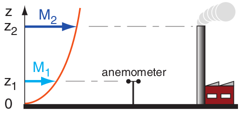

Repaso de temas de meteorología aplicada al trensporte de contaminantes.
La región de la atmósfera que nos interesa especialmente para la modelación de contaminantes se conoce como capa límite planetaria (CLP) y abarca los primeros 1-4 km de espesor desde la superficie terrestre. En particular, nos van a interesar los procesos que ocurren en la microescala, estos se definen como procesos que tienen una escala espacial menor a 1km y que responden a forzantes en un tiempo del orden de 1 hora.
Es la capa de la atmósfera influenciada por la superficie terrestre, y podemos subdividirla en:
La capa límite responde a los flujos de calor sensible y latente entre la superficie terrestre y el aire a lo largo del día.
donde: Rn es la radiación neta, H esel flujo de calor sensible y λE es el flujo de calor latente y G es el flujo de calor del suelo.
El gradiente adiabático seco no dice cuanto se modifica la temperatura de una parcela de aire seca cuando aciende verticalmente de forma adiabática:
De forma teórica (utilizando la primer ley de la temrodinámica y la ecuación de los gases ideales) se puede demostrar que Γ=g/cp = -9.8 ºC/km.
Definimos temperatura potencial (θ) como la temperatura que tendría una parcela de aire seca si fuese llevada a una presión de referencia (1000hPa) de forma adiabática, y puede calcularse como:
\[ \theta = T \bigg( \dfrac{p0}{p} \bigg)^{R/c_p M} \]
La estabilidad nos dice cuál es la tendencia de un volumen de aire a acelerarse en el sentido vertical cuando esté es perturbado. Y por lo tanto nos da una idea de la libertad con la que las masas de aire pueden moverse verticalmente.
Llamemos Λ al gradiente adiabático real (observado), luego diremos que:
Definidas por Pasquill (1961), permite definir a partir de información facilmente disponible, una clase probable de estabilidad atmosférica y luego a partir del aporte de Gifford (1961) se pudieron determinar coeficientes de dispersión (σ) por turbulencia asociados a cada clase.
| Velocidad del viento a 10m [m/s] | Día | Noche | |||
| Radiación solar incidente | |||||
| Fuerte (mayor que 50 cal/cm2 h) | Moderada (entre 25 y 50 cal/cm2 h) | Débil (mayor que 50 cal/cm2 h) | Cubierto entre 4/8 y 7/8 | Despejado o < 3/8 | |
| <2 | A | A-B | B | F | F |
| 2-3 | A-B | B | C | E | F |
| 3-5 | B | B-C | C | D | E |
| 5-6 | C | C-D | D | D | D |
| >6 | C | D | D | D | D |
Criterio para seleccionar clase de estabilidad según Pasquill:
graph TD;
A(cielo totalmente cubierto)-->|si|B[D];
A-->|no|C(noche);
C-->|si, noche|D(Nubosidad <3/8);
D-->|si|E(Viento < 3);
E-->|si|F[F]
E-->|no|G(Vieto e/ 3-5)
G-->|si|H[E]
G-->|no|I[D]
D-->|no|J(Viento > 3)
J-->|si|K[D]
J-->|no|L(Viento <2)
L-->|si|M[F]
L-->|no|N[E]
C-->|no, día|O(Radiación débil)
O-->|si|P(Viento >5)
P-->|si|Q[D]
P-->|no|R(viento <2)
R-->|si|S[B]
R-->|no|T[C]
O-->|no|U(Radiación moderada)
U-->|si|V(Viento >6)
V-->|si|W[D]
V-->|no|X(Viento >5)
x-->|si|Y[C-D]
X-->|no|Z(continuar...)
U-->|no|JK(Viento >5)
JK-->|si|JL[C]
JK-->|no|JM(Viento <2)
JM-->|si|JO[A]
JM-->|no|JP(Vieto e/ 3-5)
JP-->|si|JQ[B]
JP-->|no|JR[A-B]
Se ha encontrado empiricamente que los perfiles de viento en la capa sueperficial son similares unos con otros cuando son escalados con parametros de longitud y velocidad apropiados, este método es conocido como teoría de similitud.
El viento puede ser muy variable. Es útil pensar al viento como la superposición de tres tipos de flujos:
Estos flujos pueden ocurrir separadamente o combinados.
En condiciones neutras, el perfil de viento sigue un patro logarítmico:
\[ U(z) = \frac{u^*}{k} \ln \bigg( \dfrac{z}{z0} \bigg) \]
En condiciones estables el perfil de vientos es logaritmico-lineal:
\[ U(z) = \frac{u^*}{k} \ln \bigg( \dfrac{z}{z0} \bigg) + 6\dfrac{z}{L} \]
donde $L$ es la longitud de Obukhov, definida como:
\[ L = \dfrac{-ur_*P^3}{k}, (g/T_v)\, F_{Hsfc}}\]
1) En un dia nublado, se midió una velocidad de 5 m/s a 10m sobre el nivel del suelo con un anemometro. Cual es la velocidad del viento en el tope de una chimenea de 25m? Use 0.5m como coeficiente de rugosidad. 